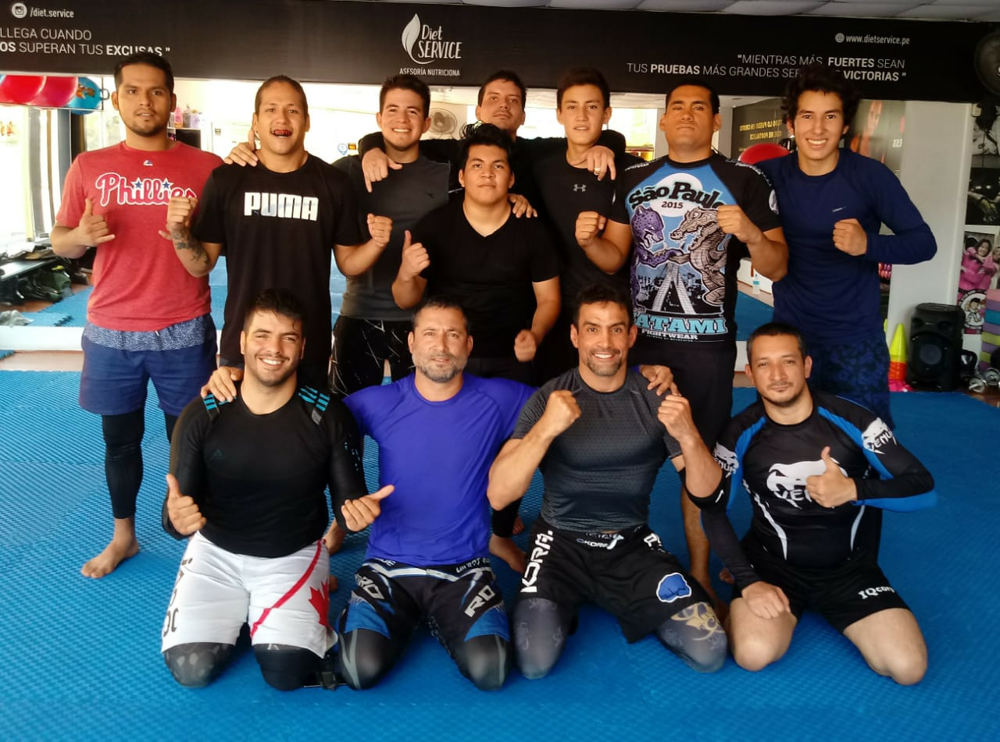
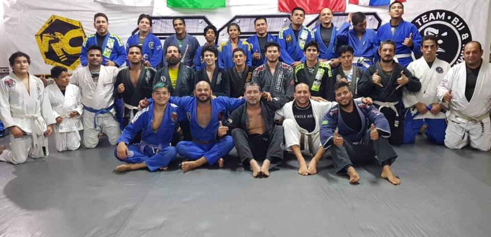

Nuestra academia funciona en las siguientes sedes:
Jr. Jacarandá 630, Santiago de Surco (referencia: a la espalda de la Academia Trener).
Instructor: Mestre Hugo Castro
Horario:

Calle Los Tulipanes 165, Santiago de Surco (referencia: la calle está entre la Clínica San Pablo y la Embajada de los EEUU).
Instructor: Angelo Cappelletti (cinta marrón).
Horario:
